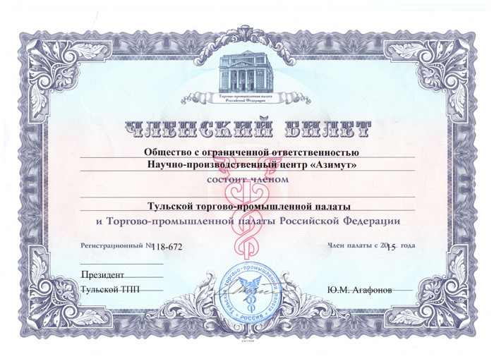

Наше предприятие занимается разработкой и изготовлением электротермического оборудования,предназначенного для разных технологических целей,в том числе для пробирного анализа.
Также активно работаем с иностранными клиентами из Таможенного союза, Европейского союза и Ближнего востока. Все они отмечают высочайшее качество нашей продукции вкупе с его невысокой стоимостью, относительно американских и новозеландских аналогов.
Наш научно-производственный центр занимается не только изготовлением, но и технической поддержкой произведенного оборудования, а также по договоренности с заказчиками проводит пуско-наладочные работы произведенного оборудования непосредственно там, где их планируют использовать.
Доверяя решение проблем своей компании в области электротермического оборудования НПЦ «АЗИМУТ», Вы в итоге получаете качество и надежность.
Производственный потенциал нашего центра очень высок, наши инженеры в состоянии спроектировать и реализовать любые решения в области электротермического оборудования с учетом сферы, специфики и индивидуальности компании заказчика.
